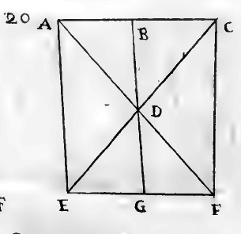

Propositio XVIII · Theorema VIII¶


PROP. XVIII. THEOR. VIII.
Posita eadem elementi quarti figura ducantur insuper lineae EA, FC, dico GF ad GE, esse vt est pyramis, cuius basis triangulum FDC, altitudo verò AB ad pyramidem, cuius basis triangulum ADE, & altitudo CB.
(tab. 2. fig. 20) Componitur proportio rectae GF ad GE, illa nempe ponderis E ad F ex rationibus grauium E ad C ad A ad F, rectarum videlicet CD ad DE, AB ad BC, & FD ad DA, vel ex ijsdem perturbatè acceptis, nempe ex CD ad DE, FD ad DA, & AB ad BC, hoc est ex rationibus trianguli FDC ad triangulum EDA, & ex recta AB ad BC; sed ex ijsdem rationibus componitur pyramis, cuius basis triangulum FDC, altitudo verò AB ad pyramidem, cuius basis triangulum ADE, & altitudo BC; ergo vt prior pyramis ad hanc, ita GF ad GE, quod &c.
COROLLARIVM.
Patet, si recta AB aequalis sit rectae BC, esse triangulum FDC ad triangulum ADE, vt recta GF ad GE.